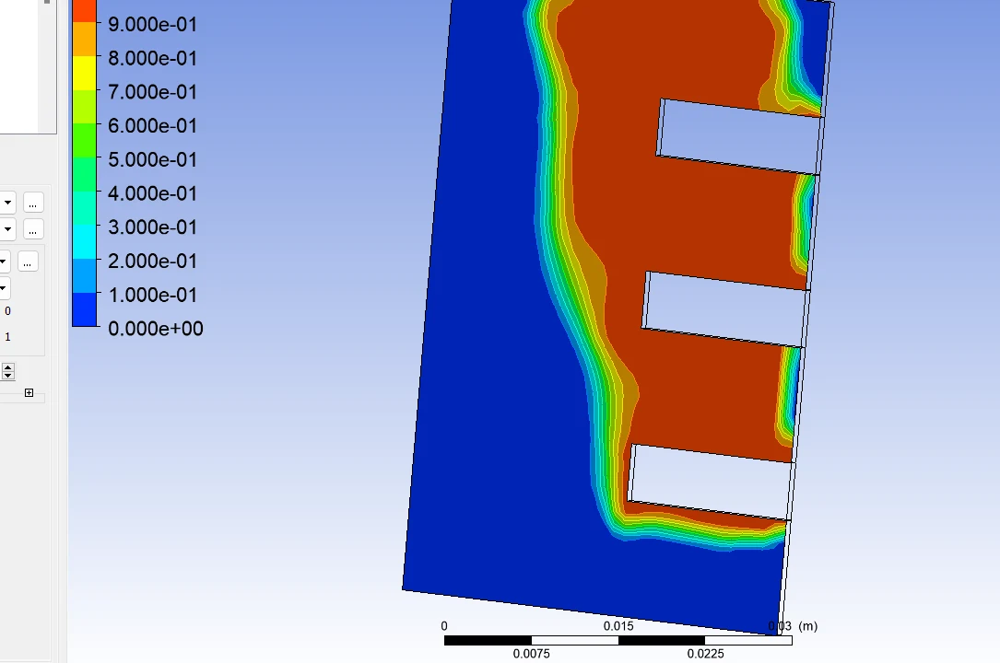
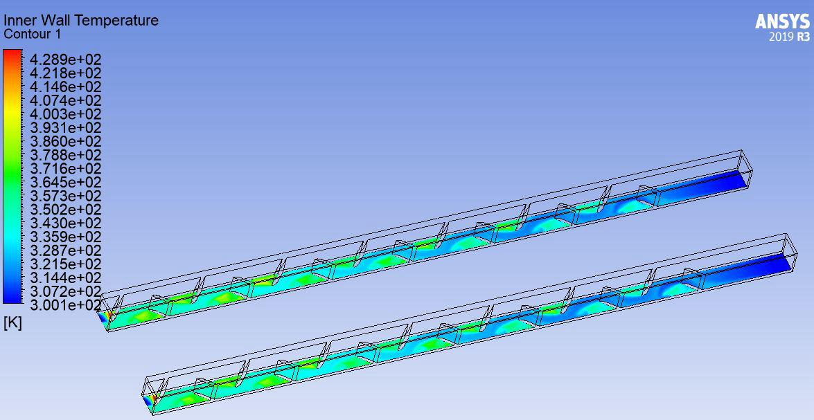
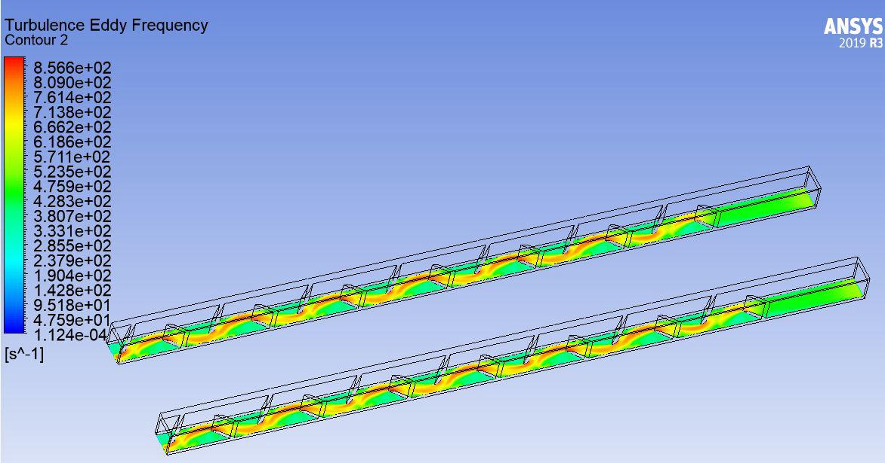
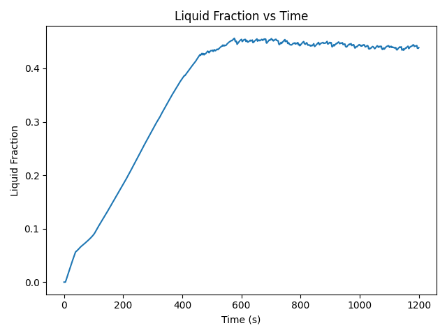

Simulation portfolio · Calgary, AB
FEA, CFD & thermal
ANSYS Mechanical, APDL, and Fluent case studies covering modal benchmarking, load cases, transient heat transfer, and cooling-channel flow.

ANSYS · NUST capstone
Copper-rail cooling channels
I worked on a custom cooling assembly and evaluated temperature, heat flux, and flow variables along the channels. The contours show how the response varies along the rail and near the channel features.





ANSYS Mechanical + APDL · modal FEA
Reinforced-concrete beam dynamics
I benchmarked a two-dimensional beam model against published vibration tests and used an APDL workflow for parametric cracked-beam studies. The verification workflow used SHELL181 for the concrete and LINK180 for the reinforcement.
I matched frequencies to physical bending shapes because solver mode numbers can change with geometry, support conditions, and cracking. The intact free-free specimen showed 1.23% mean absolute percentage error across the five measured modes.
| Mode | Experiment (Hz) | ANSYS (Hz) | Error |
|---|---|---|---|
| B1 | 530 | 530.62 | 0.12% |
| B2 | 1,340 | 1,372.20 | 2.40% |
| B3 | 2,460 | 2,489.30 | 1.19% |
| B4 | 3,750 | 3,781.30 | 0.83% |
| B5 | 5,100 | 5,182.50 | 1.62% |
Experimental frequencies from Massenzio, Jacquelin and Ovigne (2005). Error is the absolute difference divided by the measured frequency.
ANSYS Mechanical · static structural FEA
Bicycle frame load cases
I compared stress patterns and deformation under rear-wheel bearing, vertical, acceleration, braking, and horizontal load cases. The plots below pair the stress and displacement results for structural steel in the rear-wheel bearing case.


The contours help identify regions for further design review. Composite failure and fatigue life require their own assessment.
ANSYS Fluent · transient CFD and heat transfer
Phase-change material melting
I used Fluent’s enthalpy-porosity method to track transient melting in a finned domain. Liquid-fraction contours show how melting progresses around the fins, and the time history shows when the monitored fraction begins to level off.


